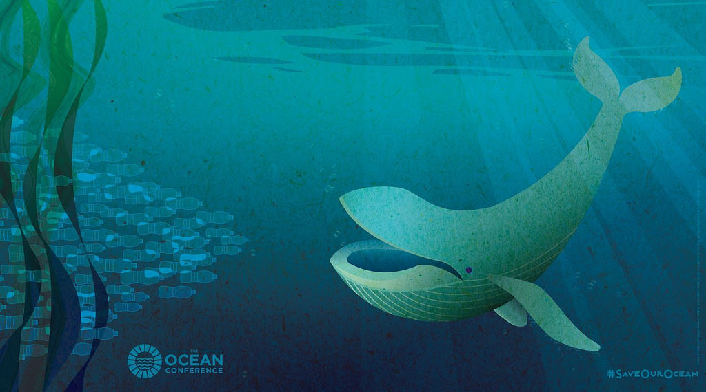

6月5日是世界環境日。聯合國秘書長古特雷斯（António Guterres）透過影片為世界環境日致詞， 重申人人可為保護唯一的家園盡一份心力，包括少用塑膠、少開車、少浪費食物，以及最重要的， 激發他人多盡一份關心的力量。
1972年，聯合國大會將6月5日訂為世界環境日，是最大的全球環境行動日。今年環境日由加拿大擔任主辦國，同時也是加拿大建國150週年。
「我鼓勵所有加拿大人參加環境日活動，親近自然，再次承諾留一個更健康的環境給後代子孫。」 加拿大環境與氣候變遷部長麥坎納（Catherine McKenna）致詞表示。
聯合國環境規劃署執行董事梭雷（Erik Solheim）指出，今日全球六大洲有數千人加入大規模的海灘和公園清掃活動， 全球共1,600平方公里的陸地受到保護，超過30個知名地標點起綠色燈光，包括帝國大廈、里約熱內盧耶穌像和尼加拉瀑布。
2030年永續發展議程的目標14和15即聚焦保育和永續利用海洋資源，保護、重建和提倡土地生態系統的永續利用。
全世界許多國家、企業和公民團體自主提出海洋健康行動承諾，累積超過600項，預計在海洋研討會上將有更多成員加入。這些行動承諾解決各式各樣的海洋問題，包括保護珊瑚礁、加強永續漁業、減塑和減緩氣候變遷影響。
「透過加入海洋研討會的自主承諾、在合作夥伴對話中針對海洋問題提出具體解決方案、重申研討會的行動呼籲，我們要逆轉所有人類對海洋的錯誤行為。」聯合國大會主席湯普森（Peter Thomson）說。